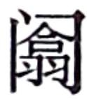

商君
者，卫
之诸庶孽公子也，名鞅
，姓公孙氏
，其祖本姬姓
也。鞅
少好刑名之学，事魏
相公叔座
为中庶子。公叔座
知其贤，未及进，会座
病，魏惠王
亲往问病，曰：“公叔
病，有如不可讳，将奈社稷何？”公叔
曰：“座
之中庶子公孙鞅
，年虽少，有奇才，愿王举国而听之。”王嘿然。王且去，座
屏人言曰：“王即不听用鞅
，必杀之，无令出境。”王许诺而去。公叔座
召鞅
谢曰：“今者王问可以为相者，我言若，王色不许我。我方先君后臣，因谓王即弗用鞅
，当杀之。王许我。汝可疾去矣，且见禽。”鞅
曰：“彼王不能用君之言任臣，又安能用君之言杀臣乎？”卒不去。惠王
既去，而谓左右曰：“公叔
病甚，悲乎，欲令寡人以国听公孙鞅
也，岂不悖哉！”
公叔 既死，公孙鞅 闻秦孝公 下令国中求贤者，将修缪公 之业，东复侵地，乃遂西入秦 ，因孝公 宠臣景监 以求见孝公 。孝公 既见卫鞅 ，语事良久，孝公 时时睡，弗听。罢而孝公 怒景监 曰：“子之客妄人耳，安足用邪！”景监 以让卫鞅 。卫鞅 曰：“吾说公以帝道，其志不开悟矣。”后五日，复求见鞅 。鞅 复见孝公 ，益愈，然而未中旨。罢而孝公 复让景监 ，景监 亦让鞅 。鞅 曰：“吾说公以王道而未入也。请复见鞅 。”鞅 复见孝公 ，孝公 善之而未用也。罢而去。孝公 谓景监 曰：“汝客善，可与语矣。”鞅 曰：“吾说公以霸道，其意欲用之矣。诚复见我，我知之矣。”卫鞅 复见孝公 。公与语，不自知膝之前于席也。语数日不厌。景监 曰：“子何以中吾君？吾君之欢甚也。”鞅 曰：“吾说君以帝王之道比三代 ，而君曰：‘久远，吾不能待。且贤君者，各及其身显名天下，安能邑邑待数十百年以成帝王乎？’故吾以强国之术说君，君大说之耳。然亦难以比德于殷周 矣。”
孝公 既用卫鞅 ，鞅 欲变法，恐天下议己。卫鞅 曰：“疑行无名，疑事无功。且夫有高人之行者，固见非于世；有独知之虑者，必见敖于民。愚者暗于成事，知者见于未萌。民不可与虑始，而可与乐成。论至德者不和于 俗，成大功者不谋于众。是以圣人苟可以强国，不法其故；苟可以利民，不循其礼。”孝公 曰：“善。”甘龙 曰：“不然。圣人不易民而教，知者不变法而治。因民而教，不劳而成功；缘法而治者，吏习而民安之。”卫鞅 曰：“龙 之所言，世俗之言也。常人安于故俗，学者溺于所闻。以此两者居官守法可也，非所与论于法之外也。三代 不同礼而王，五伯 不同法而霸。智者作法，愚者制焉；贤者更礼，不肖者拘焉。”杜挚 曰：“利不百，不变法；功不十，不易器。法古无过，循礼无邪。”卫鞅 曰：“治世不一道，便国不法古。故汤 武不循古而王，夏殷 不易礼而亡。反古者不可非，而循礼者不足多。”孝公 曰：“善。”以卫鞅 为左庶长，卒定变法之令。
令民为什伍，而相牧司连坐。不告奸者腰斩，告奸者与斩敌首同赏，匿奸者与降敌同罚。民有二男以上不分异者，倍其赋。有军功者，各以率受上爵；为私斗者，各以轻重被刑大小。僇力本业，耕织致粟帛多者复其身。事末利及怠而贫者，举以为收孥。宗室非有军功论，不得为属籍。明尊卑爵秩等级，各以差次名田宅，臣妾衣服以家次。有功者显荣，无功者虽富无所芬华。
令既具，未布，恐民之不信，已乃立三丈之木于国都市南门，募民有能徙置北门者予十金。民怪之，莫敢徙。复曰“能徙者予五十金”。有一人徙之，辄予五十金，以明不欺。卒下令。
令行于民期年，秦 民之国都言初令之不便者以千数。于是太子犯法。卫鞅 曰：“法之不行，自上犯之。”将法太子。太子，君嗣也，不可施刑，刑其傅公子虔 ，黥其师公孙贾 。明日，秦 人皆趋令。行之十年，秦 民大说，道不拾遗，山无盗贼，家给人足。民勇于公战，怯于私斗，乡邑大治。秦 民初言令不便者有来言令便者，卫鞅 日“此皆乱化之民也”，尽迁之于边城。其后民莫敢议令。
于是以鞅 为大良造。将兵围魏安邑 ，降之。居三年，作为筑冀阙宫庭于咸阳 ，秦 自雍 徙都之。而令民父子兄弟同室内息者为禁。而集小乡邑聚为县，置令、丞，凡三十一县。为田开阡陌封疆，而赋税平。平斗桶权衡丈尺。行之四年，公子虔 复犯约，劓之。居五年，秦 人富强，天子致胙于孝公 ，诸侯毕贺。
其明年，齐
败魏
兵于马陵
，虏其太子申
，杀将军庞涓
。其明年，卫鞅
说孝公
曰：“秦
之与魏
，譬若人之有腹心疾，非魏
并秦
，秦
即并魏
。何者？魏
居领阨之西，都安邑
，与秦
界河
而独擅山
东之利。利则西侵秦
，病则东收地。今以君之贤圣，国赖以盛。而魏
往年大破于齐
，诸侯畔之，可因此时
伐魏
。魏
不支秦
，必东徙。东徙，秦
据河
山之固，东乡以制诸侯，此帝王之业也。”孝公
以为然，使卫鞅
将而伐魏
。魏
使公子卬
将而击之。军既相距，卫鞅
遗魏
将公子卬
书曰：“吾始与公子欢，今俱为两国将，不忍相攻，可与公子面相见，盟，乐饮而罢兵，以安秦魏
。”魏公子卬
以为然。会盟已，饮，而卫鞅
伏甲士而袭虏魏公子卬
，因攻其军，尽破之以归秦
。魏惠王
兵数破于齐秦
，国内空，日以削，恐，乃使使割河西
之地献于秦
以和。而魏
遂去安邑
，徙都大梁
。梁惠王
曰：“寡人恨不用公叔座
之言也。”卫鞅
既破魏
还，秦
封之於
、商
十五邑，号为商君
。
商君
相秦
十年，宗室贵戚多怨望者。赵良
见商君
。商君
曰：“鞅
之得见也，从孟兰皋
，今鞅
请得交，可乎？”赵良
曰：“仆弗敢愿也。孔丘
有言曰：‘推贤而戴者进，聚不肖而王者退。’仆不肖，故不敢受命。仆闻之曰：‘非其位而居之曰贪位，非其名而有之曰贪名。’仆听君之义，则恐仆贪位贪名也。故不敢闻命。”商君
曰：“子不说吾治秦
与？”赵良
曰：“反听之谓聪，内视之谓明，自胜之谓强。虞舜
有言曰：‘自卑也尚矣。’君不若道虞舜
之道，无为问仆矣。”商君
曰：“始秦
戎翟之教，父子无别，同室而居。今我更制其教，而为其男女之别，大筑冀阙，营如鲁卫
矣。子观我治秦
也，孰与五羖大夫
贤？”赵良
曰：“千羊之皮，不如一狐之掖；千人之诺诺，不如一士之谔谔。武王
谔谔以昌，殷纣
墨墨以亡。君若不非武王
乎，则仆请终日正言而无诛，可乎？”商君
曰：“语有之矣，貌言华也，至言实也，苦言药也，甘言疾也。夫子果肯终日正言，鞅
之药也。鞅
将事子，子又何辞焉！”赵良
曰：“夫五羖大夫
，荆
之鄙人也。闻秦缪公
之贤而愿望见，行而无资，自粥于秦
客，被褐食牛。期年，缪公
知之，举之牛口之下，而加之百姓之上，秦国
莫敢望焉。相秦
六七年，而东伐郑
，三置晋国
之君，一救荆国
之祸。发教封内，而巴
人致贡；施德诸侯，而八戎
来服。由余
闻之，款关请见。五羖大夫
之相秦
也，劳不坐乘，暑不张盖，行于国中，不从车乘，不操干戈，功名藏于府库，德行施于后世。五羖大夫
死，秦国
男女流涕，童子不歌谣，舂者不相杵。此五羖大夫
之德也。今君之见秦王
也，因嬖人景监
以为主，非所以为名也。相秦
不以百姓为事，而大筑冀阙，非所以为功也。刑黥太子之师傅，残伤民以骏刑，是积怨畜祸也。教之化民也深于命，民之效上也捷于令。今君又左建外易，非所以为教也。君又南面而称寡人，日绳秦
之贵公子。诗曰：‘相鼠有体，人而无礼；人而无礼，何不遄死。’以诗
观之，非所以为寿也。公子虔
杜门不出已八年矣，君又杀祝懽
而黥公孙贾
。诗
曰：‘得人者兴，失
人者崩。’此数事者，非所以得人也。君之出也，后车十数，从车载甲，多力而骈胁者为骖乘，持矛而操
戟者旁车而趋。此一物不具，君固不出。书
曰：‘恃德者昌，恃力者亡。’君之危若朝露，尚将欲延年益寿乎？则何不归十五都，灌园于鄙，劝秦王
显岩穴之士，养老存孤，敬父兄，序有功，尊有德，可以少安。君尚将贪商於
之富，宠秦国
之教，畜百姓之怨，秦王
一旦捐宾客而不立朝，秦国
之所以收君者，岂其微哉？亡可翘足而待。”商君
弗从。
后五月而秦孝公
卒，太子立。公子虔
之徒告商君
欲反，发吏捕商君
。商君
亡至关下，欲舍客舍。客人不知其是商君
也，曰：“商君
之法，舍人无验者坐之。”商君
喟然叹曰：“嗟乎，为法之敝一至此哉！”去之魏
。魏
人怨其欺公子卬
而破魏
师，弗受。商君
欲之他国。魏
人曰：“商君
，秦
之贼。秦
强而贼入魏
，弗归，不可。”遂内秦
。商君
既复入秦
，走商邑
，与其徒属发邑兵北出击郑
。秦
发兵攻商君
，杀之于郑黾池
。秦惠王
车裂商君
以徇，曰：“莫如商鞅
反者！”遂灭商君
之家。
太史公 曰：商君 ，其天资刻薄人也。迹其欲干孝公 以帝王术，挟持浮说，非其质矣。且所因由嬖臣，及得用，刑公子虔 ，欺魏 将卬 ，不师赵良 之言，亦足发明商君 之少恩矣。余尝读商君 开塞耕战书，与其人行事相类。卒受恶名于秦 ，有以也夫！